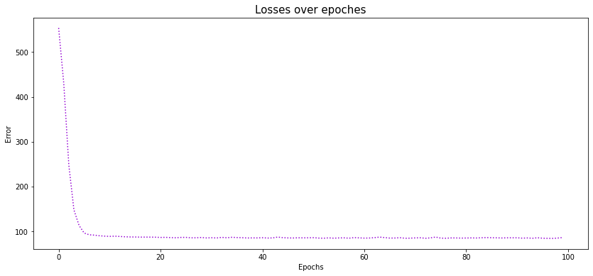

import pandas as pd
import matplotlib.pyplot as plt
import warnings
from sklearn.datasets import load_boston
import torch
warnings.filterwarnings('ignore')샘플 데이터셋 로드
# sklearn.datasets 내장 데이터셋인 보스톤 주택 가격 데이터셋 로드
data = load_boston()컬럼 소개
속성 수 : 13
- CRIM: 자치시 별 범죄율
- ZN: 25,000 평방 피트를 초과하는 주거용 토지의 비율
- INDUS: 비소매(non-retail) 비즈니스 토지 비율
- CHAS: 찰스 강과 인접한 경우에 대한 더비 변수 (1= 인접, 0= 인접하지 않음)
- NOX: 산화 질소 농도 (10ppm)
- RM:주택당 평균 객실 수
- AGE: 1940 년 이전에 건축된 자가소유 점유 비율
- DIS: 5 개의 보스턴 고용 센터까지의 가중 거리
- RAD: 고속도로 접근성 지수
- TAX: 10,000 달러 당 전체 가치 재산 세율
- PTRATIO 도시별 학생-교사 비율
- B: 인구당 흑인의 비율. 1000(Bk - 0.63)^2, (Bk는 흑인의 비율을 뜻함)
- LSTAT: 하위 계층의 비율
- target: 자가 주택의 중앙값 (1,000 달러 단위)
# 데이터프레임 생성. 504개의 행. Feature: 13개, target은 예측 변수(주택가격)
df = pd.DataFrame(data['data'], columns=data['feature_names'])
df['target'] = data['target']
print(df.shape)
df.head()(506, 14)| CRIM | ZN | INDUS | CHAS | NOX | RM | AGE | DIS | RAD | TAX | PTRATIO | B | LSTAT | target | |
|---|---|---|---|---|---|---|---|---|---|---|---|---|---|---|
| 0 | 0.00632 | 18.0 | 2.31 | 0.0 | 0.538 | 6.575 | 65.2 | 4.0900 | 1.0 | 296.0 | 15.3 | 396.90 | 4.98 | 24.0 |
| 1 | 0.02731 | 0.0 | 7.07 | 0.0 | 0.469 | 6.421 | 78.9 | 4.9671 | 2.0 | 242.0 | 17.8 | 396.90 | 9.14 | 21.6 |
| 2 | 0.02729 | 0.0 | 7.07 | 0.0 | 0.469 | 7.185 | 61.1 | 4.9671 | 2.0 | 242.0 | 17.8 | 392.83 | 4.03 | 34.7 |
| 3 | 0.03237 | 0.0 | 2.18 | 0.0 | 0.458 | 6.998 | 45.8 | 6.0622 | 3.0 | 222.0 | 18.7 | 394.63 | 2.94 | 33.4 |
| 4 | 0.06905 | 0.0 | 2.18 | 0.0 | 0.458 | 7.147 | 54.2 | 6.0622 | 3.0 | 222.0 | 18.7 | 396.90 | 5.33 | 36.2 |
# feature 변수의 개수 지정
NUM_FEATURES = len(df.drop('target', 1).columns)
print(f'number of features: {NUM_FEATURES}')number of features: 13서브클래싱으로 CustomDataset 생성
- SubClassing으로 Dataset을 상속받아 구현하게 되면 DataLoader에 주입하여 배치(batch) 구성을 쉽게 할 수 있습니다.
- 보통
__init__()함수에서 데이터를 set 해주게 되고, 기타 필요한 전처리를 수행합니다. Image Transformation은__getitem__(self, idx)에서 구현하는 경우도 있습니다. - SubClassing으로 커스텀 Dataset을 구성한다면
__len__(self)함수와__getitem__(self, idx)를 구현해야 합니다. - 참고: 파이토치 튜토리얼(Tutorials > Dataset과 DataLoader)
from torch.utils.data import Dataset
from sklearn.preprocessing import StandardScaler
class CustomDataset(Dataset):
def __init__(self, data, target='target', normalize=True):
super(CustomDataset, self).__init__()
self.x = data.drop(target, 1)
# 데이터 표준화
if normalize:
scaler = StandardScaler()
self.x = pd.DataFrame(scaler.fit_transform(self.x))
self.y = data['target']
# 텐서 변환
self.x = torch.tensor(self.x.values).float()
self.y = torch.tensor(self.y).float()
def __len__(self):
return len(self.x)
def __getitem__(self, idx):
x = self.x[idx]
y = self.y[idx]
return x, y# Custom으로 정의한 데이터셋 생성
dataset = CustomDataset(df, 'target', True)Custom으로 정의한 데이터셋은 torch.utils.data.DataLoader에 주입할 수 있습니다.
from torch.utils.data import DataLoader
data_loader = DataLoader(dataset,
batch_size=32,
shuffle=True)x, y = next(iter(data_loader))x.shape, y.shape(torch.Size([32, 13]), torch.Size([32]))PyTorch를 활용하여 회귀(regression) 예측
# Device 설정 (cuda:0 혹은 cpu)
device = torch.device("cuda:0" if torch.cuda.is_available() else "cpu")
print(device)cuda:0import torch.nn as nn
import torch.optim as optim
import torch.nn.functional as F
class Net(nn.Module):
def __init__(self, num_features):
super(Net, self).__init__()
self.fc1 = nn.Linear(num_features, 32)
self.fc2 = nn.Linear(32, 8)
# 마지막 출력층의 Neuron은 1개로 설정
self.output = nn.Linear(8, 1)
def forward(self, x):
x = F.relu(self.fc1(x))
x = F.relu(self.fc2(x))
x = self.output(x)
return x# 모델 생성
model = Net(NUM_FEATURES)
# 모델을 device 에 올립니다. (cuda:0 혹은 cpu)
model.to(device)
modelNet(
(fc1): Linear(in_features=13, out_features=32, bias=True)
(fc2): Linear(in_features=32, out_features=8, bias=True)
(output): Linear(in_features=8, out_features=1, bias=True)
)손실함수(Loss Function) / 옵티마이저(Optimzier) 정의
# Mean Squared Error(MSE) 오차 정의
loss_fn = nn.MSELoss()# 옵티마이저 설정: model.paramters()와 learning_rate 설정
optimizer = optim.Adam(model.parameters(), lr=0.005)경사하강법을 활용한 회귀 예측
# 최대 반복 횟수 정의
num_epoch = 200
# loss 기록하기 위한 list 정의
losses = []
for epoch in range(num_epoch):
# loss 초기화
running_loss = 0
for x, y in data_loader:
# x, y 데이터를 device 에 올립니다. (cuda:0 혹은 cpu)
x = x.to(device)
y = y.to(device)
# 그라디언트 초기화 (초기화를 수행하지 않으면 계산된 그라디언트는 누적됩니다.)
optimizer.zero_grad()
# output 계산: model의 __call__() 함수 호출
y_hat = model(x)
# 손실(loss) 계산
loss = loss_fn(y, y_hat)
# 미분 계산
loss.backward()
# 경사하강법 계산 및 적용
optimizer.step()
# 배치별 loss 를 누적합산 합니다.
running_loss += loss.item()
# 누적합산된 배치별 loss값을 배치의 개수로 나누어 Epoch당 loss를 산출합니다.
loss = running_loss / len(data_loader)
losses.append(loss)
# 20번의 Epcoh당 출력합니다.
if epoch % 20 == 0:
print("{0:05d} loss = {1:.5f}".format(epoch, loss))
print("----" * 15)
print("{0:05d} loss = {1:.5f}".format(epoch, loss))00000 loss = 553.85693
00020 loss = 86.32502
00040 loss = 85.68998
00060 loss = 84.82237
00080 loss = 85.05138
00100 loss = 84.69042
00120 loss = 85.61478
00140 loss = 85.20934
00160 loss = 85.58127
00180 loss = 84.89186
------------------------------------------------------------
00199 loss = 84.44175# 전체 loss 에 대한 변화량 시각화
plt.figure(figsize=(14, 6))
plt.plot(losses[:100], c='darkviolet', linestyle=':')
plt.title('Losses over epoches', fontsize=15)
plt.xlabel('Epochs')
plt.ylabel('Error')
plt.show()